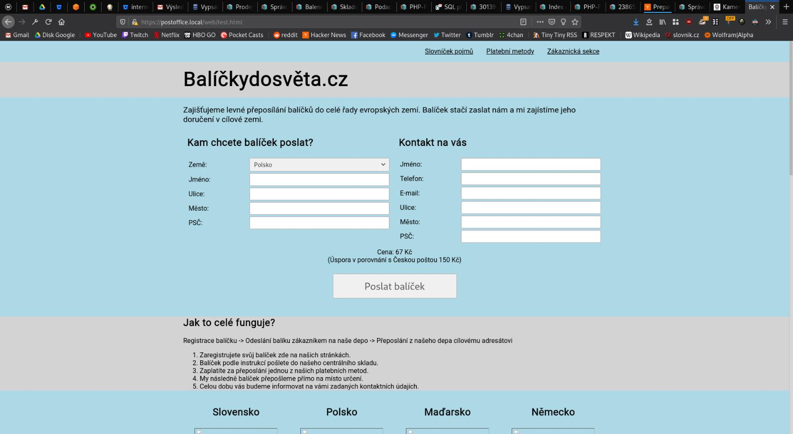
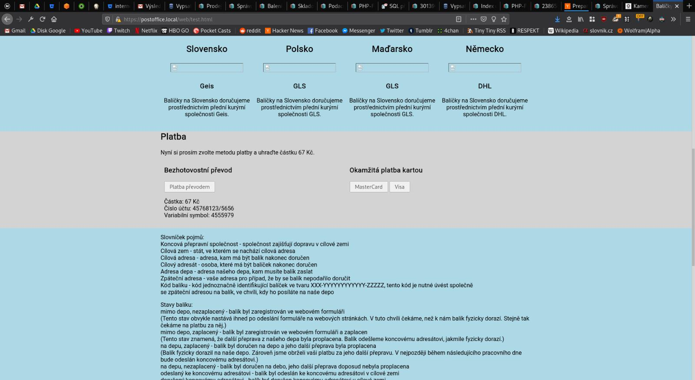
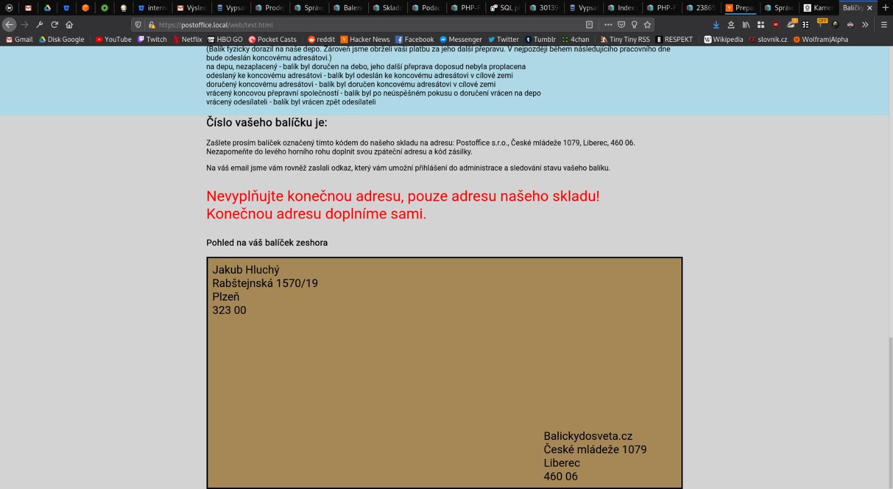

Poznamky
22.02.2020 co jsme si rikali
- Bivoj potrebuje navrh systemu. Hlavne:
- Analyzu & logickou architekturu.
- Cil je usetrit opakovane vysvetlovani reseni.
- Zalezi mu na moznosti dal system rozvijet.
- Tisk stitku
- Napojeni na prepravce (DPL). Uz je v nejakem stavu hotove.
- Registrace.
- Web pro zakazniky. (Jmeno tel. cilova adreasa, zpatechni).
- Prehazovac
- Pokyny k uhrade pro zakaznika.
- Pipac.
- Admin.
- Cekani na uphradu. Zbozi neposlu dal. Denne ho projedu znovu.
- Rozhrani pro eshopy. Hromadna podani. V dalsich fazich API.
- GDPR prijatych informaci.
- Na balik bud vytisknout carovy kod, QR code, nebo napsat hash.
- bude to bezet v ruznych jazycich na ruznych domenach.
- Co zeme, kam dorucujem to vlastni trasa baliku.
- Pokud DPD nedpruci, pak vraci zpet.
24.02.2020
- Zakaznik se nemusi hlasit heslem/loginem a ani nema tuto moznost.
- Jako admin nepotrebuju videt nic, udelam ad-hoc vypis z databaze.
- Komunikacni kanaly pro zakaznika telefon, email, zadavaci formular pro poslani?
- Ano chceme zakaznikovi umet potvrdit doruceni.
- Nektere UC rovnou oznacime jako nizssi prioritu.
- Prosli jsme cast UC supportu.
- Vznikne zmenovy zurnal, staci standardni textovy log, kde bude cas a zmena pole u objednavky. Nebude delat vyhledavani v zurnalu.
- Dobropisy nebudem automatizovat v prvni fazi.
- Reseni odmitnutych nebo nedorucenych zasilek.
- Dostal jsem starsi verze obrazovek registracni formular.
- Od klienta data pouze sbirame, validace se dela klidne rucne.
28.02.2020
- Omezíme pouze na Německo.
- Resili jsme UC-04.
Otevrene otazky
- Nejaky konkretni priklad koncoveho dopravce. Chci se podivat na API a sluzby co nabizi.
- Validace adresy, to znamena, ze ji poslem koncovemu dopravci? Pokud ji schroupne tak valide je OK?
  